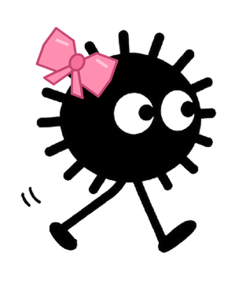

残り時間: 0:30 | スコア: 0 | バケツ数: 3 | ブースト: OFF
練習を終了

君のまっくろくろすけ
飛び出すバケツ避けサバイバル
モード
通常モード
制限時間まで逃げ切れ！
練習モード
時間無制限・バケツ数固定
プレイ人数
ひとりで
1P
ふたりで
1P・2P（ピンクのリボン）
ステージ
ステージ1
飛び出すバケツ
ステージ2
めいの両手がはさみうち！
ステージ3
60秒！後半はめいの手も
遊び方
・スマホを傾けると、その方向に進み続けます。
・
ピンクのこんぺいとう
をひろうと、少しの間ブースト（スピード2倍）！
・
きいろのこんぺいとう
をひろうと、スコアが+1こ。
・
赤い影
が大きくなったらバケツが来る合図！ めいの手は、
ふるえたら
おそってくる合図！ その場所から離れよう。
・
ふたりプレイ
：1Pは矢印キー（またはコントローラー1P）、2PはWASD（またはコントローラー2P）。こんぺいとうとスコアは共有。つかまった人は退場、ふたりともつかまるとゲームオーバー。ひとりでも逃げ切ればクリア！
・当たるとゲームオーバー。制限時間（ステージ1・2は30秒、ステージ3は60秒）まで逃げ切ればクリアです。
コントローラー: 確認中...
ゲームスタート
めいに捕まった。。。
もう一度
待機画面に戻る